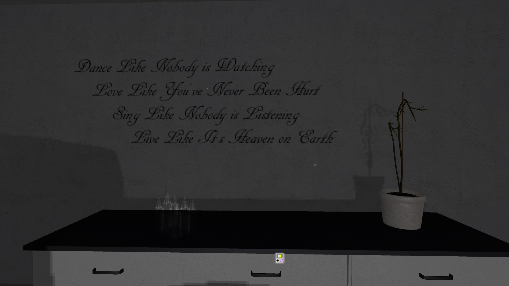
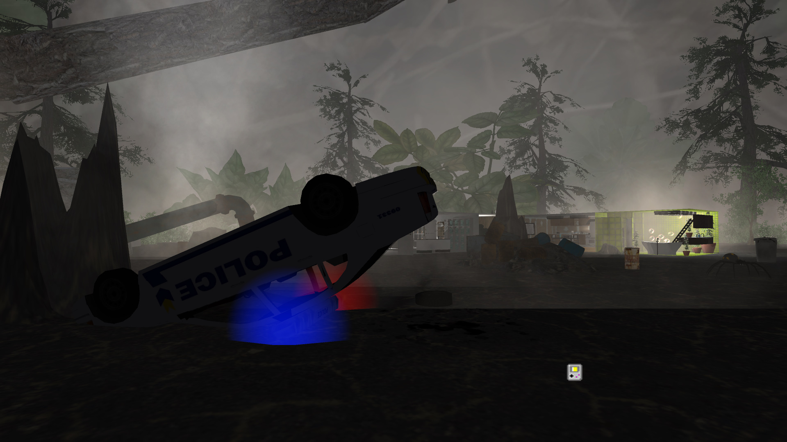
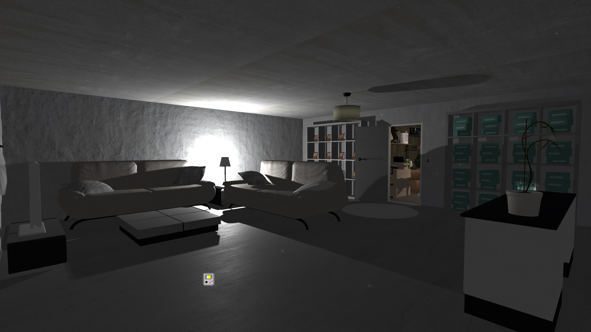
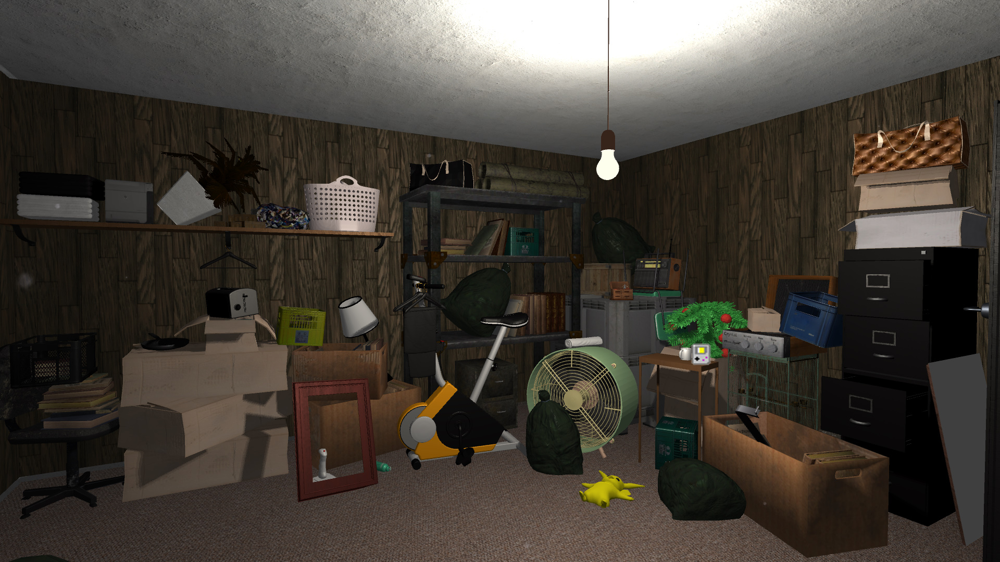
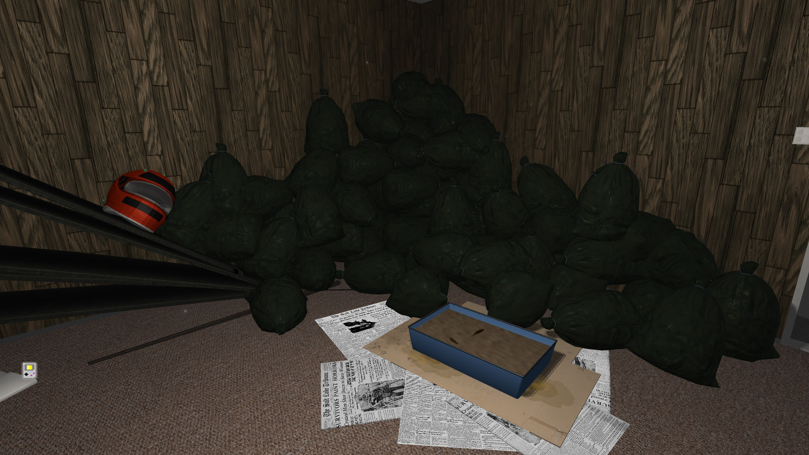
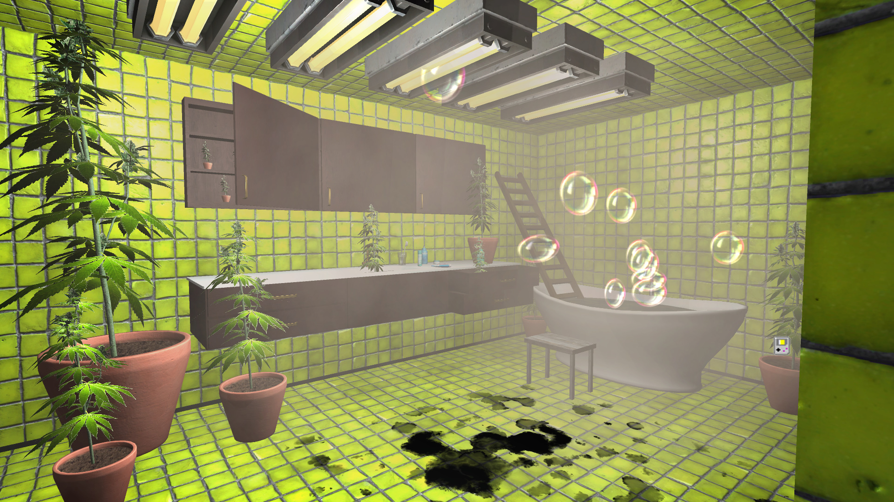
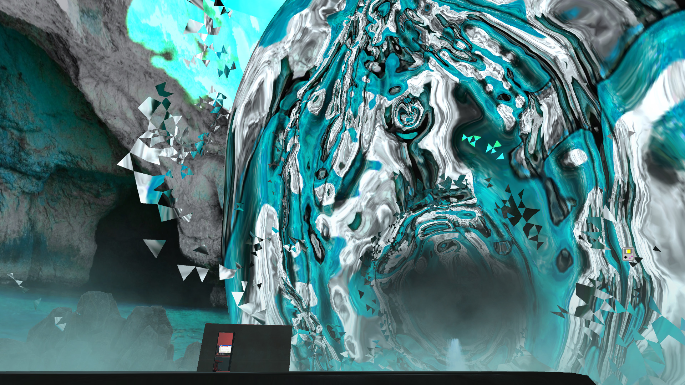
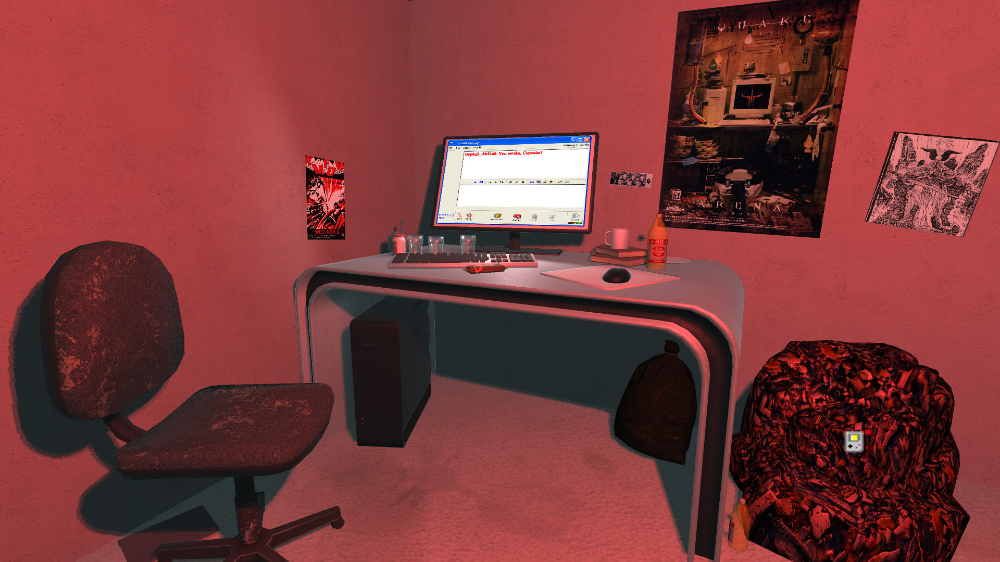
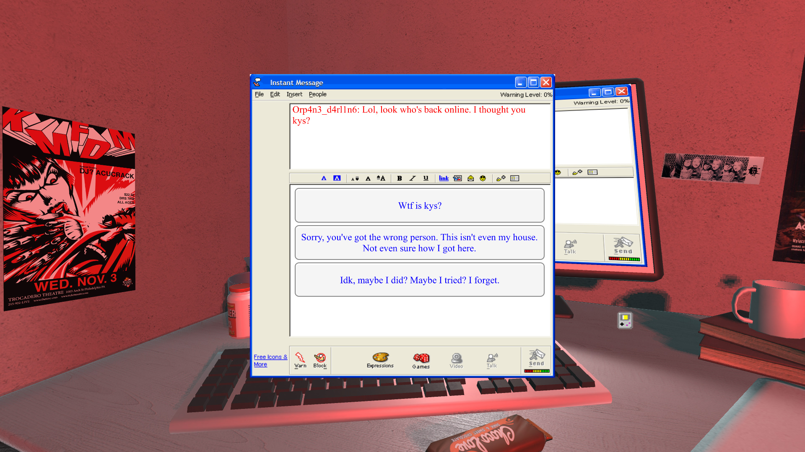

Shrine Maidens of the Unseelie Court
Shrine Maidens of the Unseelie Court is an interactive virtual environment for PC and Mac.









Shrine Maidens of the Unseelie Court is part of a larger, nameless, world-building project
exploring queer apocalypse, trans-futurism, and possibilities for community that might
exist there. As with most sci-fi, it's more about circumstances of the present than
prognostication. We live in catalytic, if not cataclysmic times.
This iteration explores feelings of isolation within suburbia and an ambivalence about
online connectivity as a mode of circumventing it. For many trans women, online platforms
are our only life line to others like us. Furthermore, the opportunity to socialize in a
disembodied way can be highly therapeutic. Nevertheless, neither the architectures of
these spaces, nor the actors within them, are inherently benign.
Music by
Ultrademon.
Special thanks to
Seanna Musgrave
for coding assistance. Twine text integration in Unity courtesy of
Yarnspinner.